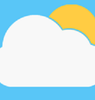

Meteociel iOS, la météo complète et gratuite : actualités météorologiques, prévisions, observations en temps réel, analyse...
Regardez, diffusez et découvrez ce que le reste du monde regarde avec YouTube. YouTube est une plateforme qui offre à chacun la possibilité de faire entendre sa voix et de découvrir le monde. Explorez du contenu, de la musique, des actualités et bien plus encore avec l'application officielle YouTube. Découvrez et diffusez encore plus de vidéos avec l'application officielle YouTube. Abonnez-vous aux chaînes diffusant votre contenu préféré, partagez-les avec vos amis ou téléchargez vos propres vidéos pour que tout le monde puisse les voir. Tirez le meilleur parti de votre application de streaming vidéo et découvrez encore plus de contenus avec YouTube.